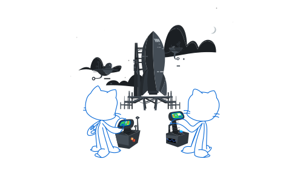

Understanding the use of LLM for ASR models (speech to text)
This blog is my basic understanding of the research paper about Adapting Large Language Models with Speech for Fully Formatted End-to-End Speech Recognition, which can be found
here.The research paper is basically about an alternative approach using pretrained large language models for end-to-end automatic speech recognition (ASR). The model developed using this approach outperforms strong ASR models like Whisper by OpenAI as well as decoder-only based techniques.
An E2E ASR model is expected to convert speech signals into complete transcriptions, making it useful for certain NLP tasks as well. The researchers used approximately 78000 hours of transcribed audio as their dataset, while Whisper was trained in a supervised manner on 680,000 hours of audio.
Development of ASR Models
The development of ASR models involves several preprocessing steps like text normalization and inverse text normalization.
- Text normalization refers to converting speech into its respective text counterpart. For example, "twenty-four" should be represented as 24 and "hundred percent" as 100%.
- Inverse text normalization converts written text back into spoken form.
The following image shows the composition of an encoder-decoder architecture (with CTC as a loss function):

using an encoder decoder based LLM approach
In this approach, both the text encoder and decoder are initialized using a pretrained LLM. Since the token size of the LLM is larger than the speech tokens, token embeddings for both input and output were fixed. It’s important to note that the text encoder is not required during the inference phase and is only used for training.
The primary loss functions used in this approach were CTC, Cross-Entropy (CE), and Masked Language Modeling (MLM):
- CE and MLM are applied to the outputs of the decoder.
- CTC is applied during speech encoding (since it is a common loss function for ASR).
Additionally, gradients and backpropagation were employed to update the model parameters during training.
Encoder-Decoder vs. Decoder-Only
it's crucial to understand the fundamental difference between encoder-decoder and decoder-only architectures:
- An encoder-decoder architecture first transforms the input into a fixed-size vector representation. This vector is then decoded by the decoder to generate the output.
- In a decoder-only architecture, the output is generated token by token based on the previously generated tokens, predicting one token at a time.
There were also other stats mentioned, and y'all can have a look into the research paper to get to know the working in detail.
freshlimesofa | 30-09-2024
. -. -..
